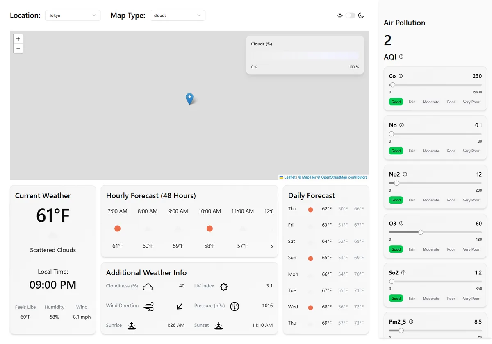

Build a Real React Weather Dashboard
A beginner-friendly, step-by-step companion to the six-hour build-along "Stop Copying Tutorials – Build a Real React App With Me". You build a weather dashboard with React 19 and TypeScript: a city dropdown, current, hourly and daily forecast cards, an interactive Leaflet map with weather layers and a legend, an air-pollution side panel with tooltips, skeleton loaders, a responsive layout and a light/dark switch. Data comes from OpenWeather through TanStack Query, checked by Zod. Every file is explained line by line. The guide also ran the finished app in a real browser, documents the bugs it found, and adds five extension steps that fix them, prepare the app for deployment and switch the code to React 19 APIs.
▶ Watch the full video
How this guide is organised
Stack
Versions are the ones locked in the repo's package-lock.json (installed with npm ci). Everything in this guide was built and run against them, with Node 24.15 and npm 12.
| Layer | Tool | Used for |
|---|---|---|
| Language | TypeScript 5.9.3 with JSX | Every file in src/; tsc -b type-checks before each build |
| UI library | React 19.2.0 (react-dom 19.2.0) | Components, props, state, hooks, context, Suspense |
| Build tool | Vite 7.1.11 with @vitejs/plugin-react | Dev server with hot reload, production build, the @/ path alias, VITE_ environment variables |
| Styling | Tailwind CSS 4.1.15 with @tailwindcss/vite | Utility classes, a custom xs breakpoint (500px), the dark: variant, all configured in src/index.css |
| Components | shadcn/ui (style "new-york", base colour zinc) on Radix UI (select 2.2.6, tooltip 1.2.8, slider, switch), lucide-react 0.548.0 | The dropdowns, tooltips, pollutant sliders, theme switch and skeletons |
| SVG icons | vite-plugin-svgr 4.5.0 | Importing the app's SVG icons as React components |
| Server data | @tanstack/react-query 5.90.5 | Fetching, caching and sharing API data; useQuery and useSuspenseQuery |
| Validation | zod 4.1.12 | Schemas for the weather, geocoding and air-pollution answers, and the TypeScript types inferred from them |
| Map | leaflet 1.9.4, react-leaflet 5.0.0-rc.2 (a release candidate), @maptiler/leaflet-maptilersdk 4.1.1 | The interactive map, the marker, click-to-move, the MapTiler base map and the OpenWeather weather layers |
| Data source | OpenWeather APIs | Geocoding, One Call 3.0 (needs its own "One Call by Call" subscription), Air Pollution, weather map tiles and icons |
| Quality | ESLint 9.38 with the React Hooks and React Refresh plugins | npm run lint; the repo has 15 lint errors, steps 25 and 27 bring it to zero |
Start here if you are new
- 📖GlossaryNew to development? Every term used in this guide (npm, Vite, props, state, hooks, query keys, Suspense, Zod schemas, tile layers, breakpoints, lazy loading…) explained in plain language, with examples from this app.reference
- ★How Data Flows Through the AppOne dropdown click followed to the rendered cards: state in App, the geocode query, deriving coords (and why the repo first asks for latitude 0, longitude 0), query keys and the shared cache, fetch → JSON → Zod, Suspense, re-renders and errors.concept
Steps
- 01IntroThe finished weather dashboard, what you will learn, and the tools used.00:00
- 02Project SetupCreate a React + TypeScript project with Vite and clean out the starter files.01:10
- 03Installing Tailwind CSSAdd Tailwind CSS v4 with its Vite plugin and check that utility classes work.05:29
- 04Installing TanStack QueryAdd TanStack Query and wrap the app in a QueryClientProvider.07:35
- 05Fetching from the OpenWeather APIGet an API key, store it in an env variable, and fetch the One Call API.09:22
- 06useQueryFetch weather data with useQuery: query keys, query functions, loading and data.20:10
- 07TypeScript Support with ZodDescribe the API response with a Zod schema and get typed data.23:18
- 08Dashboard CardsBuild the reusable Card and the current, hourly, daily and additional-info cards.28:33
- 09SVG Icons with svgrImport SVG files as React components with vite-plugin-svgr.01:27:51
- 10Card RefinementsPoint the wind-direction arrow the right way with an inline style rotation, and wrap up the cards.01:33:05
- 11Interactive Map: Leaflet SetupAdd a Leaflet map with react-leaflet, shared coordinates and click-to-move.01:36:23
- 12shadcn/uiSet up shadcn/ui: path aliases, components.json and the Select component.01:59:54
- 13Location DropdownA dropdown of cities that sets the location state.02:09:20
- 14GeocodingTurn a city name into coordinates with the OpenWeather Geocoding API.02:12:48
- 15Interactive Map: Following the DropdownMake the map move when the city changes: the key trick, then panTo.02:26:15
- 16Weather Map LayeringOverlay OpenWeather tiles (clouds, rain, wind...) and a map-type dropdown.02:31:43
- 17Custom Base Map with MapTilerReplace the default tiles with a MapTiler style.02:44:52
- 18Map LegendA colour legend for each weather layer.02:50:49
- 19Skeleton Loaders and SuspenseuseSuspenseQuery, Suspense boundaries and skeleton placeholders.03:04:43
- 20Side Panel: Air PollutionA side panel with air quality data from the Air Pollution API.03:31:04
- 21TooltipsExplain each pollutant with shadcn tooltips.04:14:34
- 22Side Panel SkeletonsLoading placeholders for the side panel.04:28:37
- 23Responsive DesignMake the dashboard work from phone to wide screen with Tailwind breakpoints.04:38:22
- 24Light and Dark ModeA ThemeProvider, context and a switch that toggles the dark class.05:36:01
Extensions: test it, fix it, ship it
Not in the video. The finished app was run in a real browser with test data, which exposed several bugs. These steps fix them and prepare the app for real users. Every change was type-checked, linted, built and re-tested in the browser.
- 25Fix the Bugs Found While TestingNo more lat 0 / lon 0 or "custom" requests, HTTPS everywhere, safe geocoding, the broken production marker, the map click leak and the lint errors.extra
- 26Handle API Errors GracefullyError boundaries with QueryErrorResetBoundary, readable messages and a Try again button.extra
- 27Remember the Theme & Match the MapSave the theme, follow the system setting, and switch the MapTiler style with it.extra
- 28Smaller Bundle & Safe DeploymentLazy-load the map, understand what VITE_ variables expose, and deploy without leaking keys.extra
- 29Switch to React 19 APIsMake the code React 19-only: use(), the context as provider, a <title> that follows the city, and root error logging.extra
React Handbook
The steps follow the video and explain each line as it is written. The handbook steps back and explains the ideas underneath: the JavaScript and TypeScript features React code leans on, how React renders, what each tool and config file does, Tailwind and shadcn in depth, HTTP and API keys, TanStack Query's cache, Zod, how web maps work, responsive and accessible layouts, and what it takes to ship the app. Each chapter links back to the steps where the idea is used.
- 01JavaScript & TypeScript Essentials for ReactModules, arrow functions, destructuring, promises, async/await, types, generics and type inference.chapter
- 02React FundamentalsComponents, JSX, props, state, rendering, effects, context and the rules of hooks.chapter
- 03Tooling: npm, Vite, TypeScript Config & ESLintWhat each config file does, dev vs build, path aliases, and reading lint errors.chapter
- 04Styling with Tailwind CSS & shadcn/uiUtility classes, responsive prefixes, dark variant, design tokens and copy-in components.chapter
- 05HTTP, REST APIs & API KeysRequests and responses, status codes, query strings, CORS, HTTPS and keeping keys safe.chapter
- 06TanStack Query in DepthThe cache, query keys, staleTime, retries, suspense queries, errors and devtools.chapter
- 07Validating Data with ZodSchemas, inferred types, optional fields, parse vs safeParse and reading Zod errors.chapter
- 08Maps on the Web: Leaflet, Tiles & LayersCoordinates, zoom levels, tile servers, overlays and how react-leaflet wraps Leaflet.chapter
- 09Responsive & Accessible InterfacesMobile-first layouts, breakpoints, grid and flex, keyboard use, contrast and alt text.chapter
- 10Shipping a React AppProduction builds, environment variables, bundle size, deployment, monitoring and security.chapter
Compared with the GitHub repo
Code is embedded from AustinDavisTech/WeatherApp. The repo has a single commit, 272cc5f ("enjoy YouTube :)"), which contains only the finished app. The final files shown in this guide come from that commit and were built and run. Every in-between version of a file exists only in the video; where a step shows one, it is labelled "transcribed from the video at h:mm:ss (not separately built)".
The MapTiler key. The repo's src/components/Map.tsx has a real MapTiler key typed directly into line 58. Wherever this guide shows that file, the key is replaced with "YOUR_MAPTILER_KEY". Use your own key, and never commit it. Step 28 explains why a key used in browser code is visible to anyone anyway, and how to limit the damage.
Running the finished app in a real browser turned up these findings. Each one is explained on the pages listed; the extension steps fix them.
| Steps | Finding |
|---|---|
| 15, 25 | Requests for latitude 0, longitude 0 on every load. While the city is being geocoded, App.tsx falls back to ?? 0, so the cards ask for the weather in the middle of the ocean before Tokyo. The presenter sees the flicker at about 2:28:00, traces it to this fallback at about 2:30:40 and leaves the fix for later; it is still in the final code. See How Data Flows. |
| 14, 25 | An empty geocode answer crashes the app. geocodeData?.[0].lat throws TypeError: Cannot read properties of undefined (reading 'lat') and the page goes blank. |
| 14, 25 | local_names is required in GeocodeSchema, but OpenWeather leaves it out for many places. The geocode query then fails and the app silently shows the weather for 0, 0 while the dropdown names the city. |
| 05, 25, 26 | No res.ok check and no error boundary. An error answer (such as 401 for an invalid key) is parsed as weather, giving a cryptic ZodError about "lat"; TanStack Query retries (28 requests in 20 seconds in the test), then the whole page goes blank. |
| 05, 26 | One Call 3.0 needs a separate "One Call by Call" subscription on your OpenWeather account. Without it, every weather card fails with a 401. |
| 14, 20, 25 | Plain http:// for geocoding and air pollution. Once the site is deployed on HTTPS, browsers block these as mixed content. One Call already uses HTTPS. |
| 11, 25 | The map marker is broken in the production build. Vite inlines Leaflet's small marker images, and Leaflet then builds an invalid image URL. It works on the dev server, so it is easy to miss. |
| 11, 25 | Map click listeners pile up. MapClick calls map.on("click", ...) and map.panTo(...) during render with no cleanup, so each re-render adds another listener (reasoned from the code and Leaflet's API). |
| 17, 28 | Keys end up public. The MapTiler key is hard-coded in a public repo, and any VITE_ variable is copied into the JavaScript bundle (verified: a test key appeared twice in dist/assets/*.js). Restrict the MapTiler key to your site in its dashboard; protecting the OpenWeather key needs a small server or proxy. .gitignore doesn't cover .env. |
| 14, 25 | The city isn't URL-encoded. getGeocode puts the name straight into the URL; "New York" works because browsers encode the space, but other input may break. |
| 28 | One 2,005.92 kB JavaScript file (558.90 kB compressed) triggers Vite's 500 kB warning. Lazy-loading the map cuts the first download to 623.35 kB (177.48 kB compressed). |
| 24, 27 | The theme always starts dark, isn't saved and ignores the system setting; the MapTiler style stays dark in light mode. |
| 13, 25 | The location dropdown's placeholder says "Theme" (a copy-paste slip; harmless, because a city is always selected). |
| 05 | Units are fixed to imperial (°F, mph) through units=imperial in the One Call URL. |
| 25, 27 | 15 lint errors as committed (empty {} props types in the toggle and six skeleton files, and one "only-export-components" in ThemeProvider.tsx). npm run build still passes. |
How the code was verified
The repo was installed with npm ci from its lockfile. npm run build (type check plus Vite build) passes as committed; npm run lint reports the 15 errors listed above. The production build was then served with vite preview and opened in headless Chrome. OpenWeather's answers were replaced by fake but schema-valid test data, MapTiler was blocked, and the real OpenWeather icons were loaded. The scenarios were: a normal load, an empty geocode answer, a geocode answer without local_names, an invalid key (401), a missing One Call subscription (401), a 390-pixel phone screen, light mode and theme persistence. The screenshots in this guide come from those runs, so they show test data, not real weather.
The five extension steps were type-checked, linted (zero errors after step 27), built and re-tested in the same browser setup. After step 25 a normal load sends three requests, all over HTTPS, and none for 0, 0.
Not verified: real API answers and limits, and what the MapTiler base maps look like (they were blocked in the test).
Before you start. You need Node.js, a code editor, an OpenWeather account with an API key and the "One Call by Call" subscription for One Call 3.0, and a MapTiler account with its own key. Check both providers' sites for current plans and limits; this guide doesn't quote prices. Keep the keys in a .env file that Git ignores, and never paste one into a screenshot. This guide never reproduces the keys visible in the video.